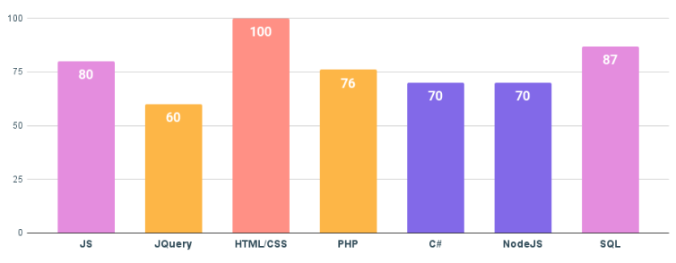

ВЕБ-РОЗРОБНИК
Спеціаліст, який розробляє, тестує, виправляє, оновлює, удосконалює сайти, веб-сервіси та мультимедійні додатки за допомогою мов програмування. Якщо пояснювати простими словами, то це програміст, який займається тим, що створює сайти та робить все, для того щоб вони коректно працювали.
Історія спеціальності

Історія професії веб-розробника почалась у 1990 році, коли битанський винахідник Тім Бернерс-Лі представив світу революційний проєкт "Світова павутина" (World Wide Web), в рамках якого він розробив перший сайт. З цього моменту технології почали стрімко розвиватися, і через декілька років з'явився повноцінний браузер Mosaic, мова розмітки HTML, каскадні таблиці стилів CSS, мова програмування JavaScript, С та С++. Деякий час єдиного синтаксису не існувало, що викликало труднощі у роботі програмістів.
Проривом у цій галузі стала поява скриптової мови PHP. З її допомогою веб-сторінки перетворились з статичних текстів у динамічні зображення з кнопками, формами, анімацією. Гарні та зручні сайти почали користуватия популярністю.
Мати власну сторінку в інтернеі хотіли не тільки великі корпорації, але й звичайні користувачі. За останні 30 років IT-галузь стала одною з провідних, а веб-розробники затребувані в різних областях: від інтернет-маркетинга до штучного інтелекту.
Напрямки у веб-розробці:
|
Спеціаліст який працює з внутрішніми частинами сайту: пише коди на різних мовах, відповідає за безперебійну роботу сайту, організацію технічних процесів та базу данних. Розробник з бек-енду використовує наступний інструментарій: різні мови програмування (PHP, Perl, Java, Python, Ruby), фреймворки (Kohana, Codeigniter, Yii), а також MySQL, для збереження данних. |
Спеціаліст, який працює над візуальною стороною сайту. Він перекладає дизайн-проєкт у код. Щоб зовнішня сторона сайту коректно функціонувала і скрізь відображалися правильно картинки. Його основні інструменти - CSS, HTML, JavaScript. Цей перелік доповнюється ще цілим переліком програм, призначених для покращення роботи сайту: Bootstrap, jQuery, AnguarJs, LESS, Sass/SCss та ін. |
Це майстер на усі руки в світі веб-розробки. Йому під силу реалізувати як клієнтську, так і серверну сторону додатку, котрим, зазвичай, займаються FrontEnd та BackEnd розробники окремо один від одного. Таким чином, Full-Stack спеціаліст здатний самотужки вести проєкт від початку до кінця. |
Навички та вміння Frontend розробника
SOFT SKILLS
- Креативність
- Вміння переконувати
- Вміння працювати в команді
- Тайм-менеджмент
- Адаптованісь
HARD SKILLS
- Навички роботи з хмарними хостингами - AWS, GCP, Azure
- Навички роботи з алгоритмами штучного інтелекту
- Прийняття рішення для вирішення проблем
- Управління командами
- UX-design
Популярні мови та технології для frontend-розробки
Найпопулярніші мови та технології для frontend-розробки на даний момент(2022, 8 червня)
HTML - Стандартизована мова гіпертекстової розмітки документів для перегляду веб-сторінок у браузері. Веб-браузери отримують HTML документ від сервера за протоколами HTTP/HTTPS або відкривають з локального диска, далі інтерпретують код в інтерфейс, який відображатиметься на екрані монітора.
CSS - формальный язык описания внешнего вида документа (веб-страницы), написанного с использованием языка разметки (чаще всего HTML или XHTML). Также может применяться к любым XML-документам, например, к SVG или XUL.
React - JavaScript-бібліотека з відкритим вихідним кодом для розробки інтерфейсів користувача.
JavaScript(JS) - мультипарадигменна мова програмування. Підтримує об'єктно-орієнтований, імперативний та функціональний стилі.
PHP - скриптова мова загального призначення, що інтенсивно використовується для розробки веб-додатків.
Плюсы и минусы професии

ADVANTAGES
- плюси та мінуси професії
- творча робота, тому що кожне завдання унікальне, і для його вирішення існує кілька способів
- можливість суміщення з навчанням
- не завжди потрібен диплом
- можливість віддаленої роботи
DISADVANTAGES
- ненормований робочий день
- сидяча робота
- велике навантаження на зір, що може призвести до його погіршення
- іноді доводиться працювати "в стіл"" і переробляти, так як вимоги змінюються на ходу
- необхідно постійно навчатися, тому що все швидко застаріває – це мінус тільки для тих, хто не любить вчитися
Скільки отримують веб-розробники?
Рівень зарплати залежить не лише від досвіду, а й від основної мови програмування. Одні популярні та прості в освоєнні, інші зустрічаються рідше та застосовуються для вирішення вузьких завдань. Поговоримо про найпоширеніші.
Рівні спеціалістів:
Junior - знає мови програмування та пише нескладний робочий код, який перевіряють старші колеги. Досвіду мало – 0-1,5 роки. Поки не репрезентує процес розробки повністю, виконує отримані завдання.
Middle - досвід 1-3 роки. Зазвичай, є проекти, які зробив повністю самостійно. Може проводити розробку без надмірного контролю, знає найкращі практики своїх мов. Вміє перевіряти та коригувати чужий код.
Senior - стаж від 4 років, але важливіше багатий досвід. Бачить розробку з погляду всіх учасників: від менеджерів до молодших колег. Здатний пропонувати глобальні рішення - наприклад, зміну набору (стеку) технологій. Часто обіймає керівну посаду.
| Напрями | Кількість вакансій | Junior | Middle | Senior |
|---|---|---|---|---|
| Fullstack-розробник | 340 | 20 | 17 | 17 |
| Backend-розробник | 1099 | 43 | 40 | 40 |
| Frontend-розробник | 2159 | 66 | 55 | 55 |

Перспективи професії

Є три типи людей. Перших звинувачують у тому, що інтелект без проблем сидить на робочому місці і допомагає заробляти на життя, інших – не розуміють, якщо виявляться нейронні мережі, вони починають робити все. рутинна робота для них, щоб присвятити своє життя більш напруженій роботі. А третій розуміє, що заміна людської праці машинною – процес неминучий, але якщо можна когось позбавити без роботи, то це точно не вони, люди, як програмісти за фахом.
ешта з нас так боїться клерків, навіть якщо все дійде до того, що люди в корпораціях без проблем можуть замінити програміста, який буде служити нейровимірюванню, яке побудоване на самонавчанні цього самовдосконалення.Потужні гаджети допоможуть все більшій кількості програмістів, і надалі їх кількість буде тільки зростати